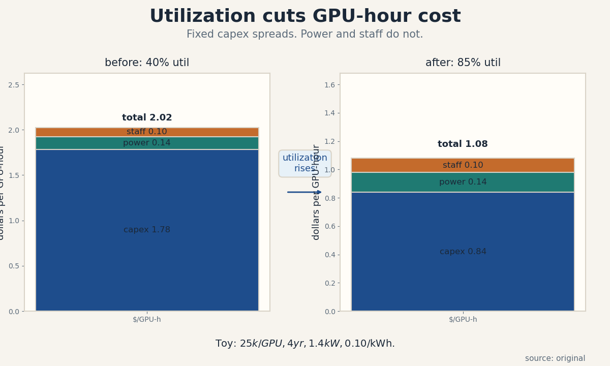
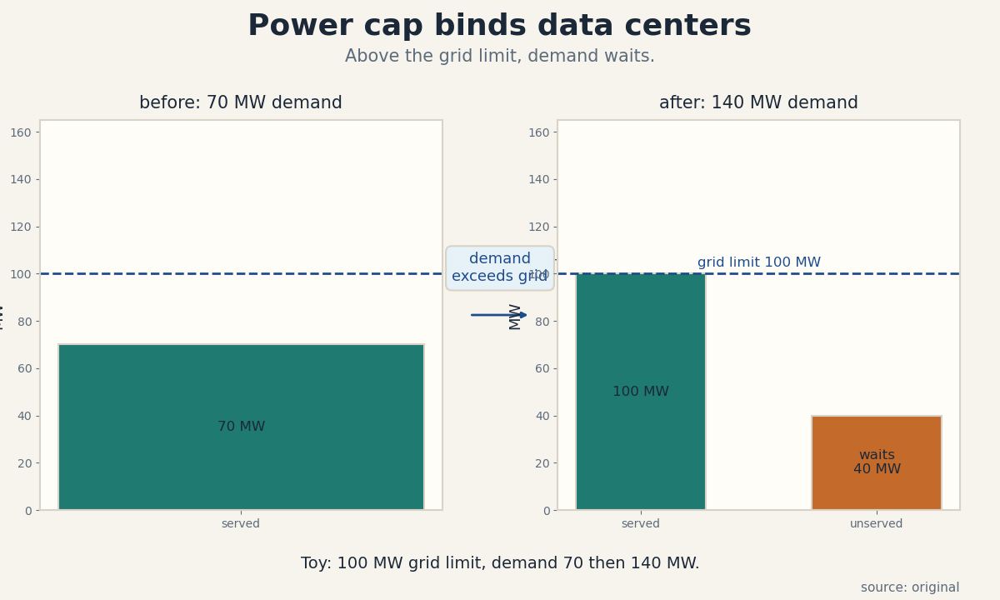
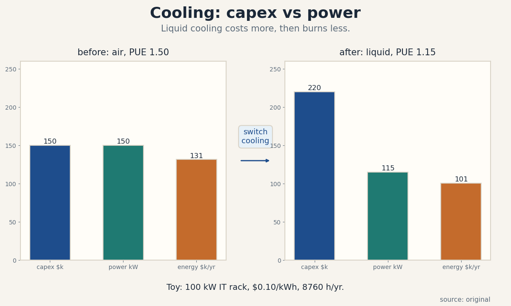
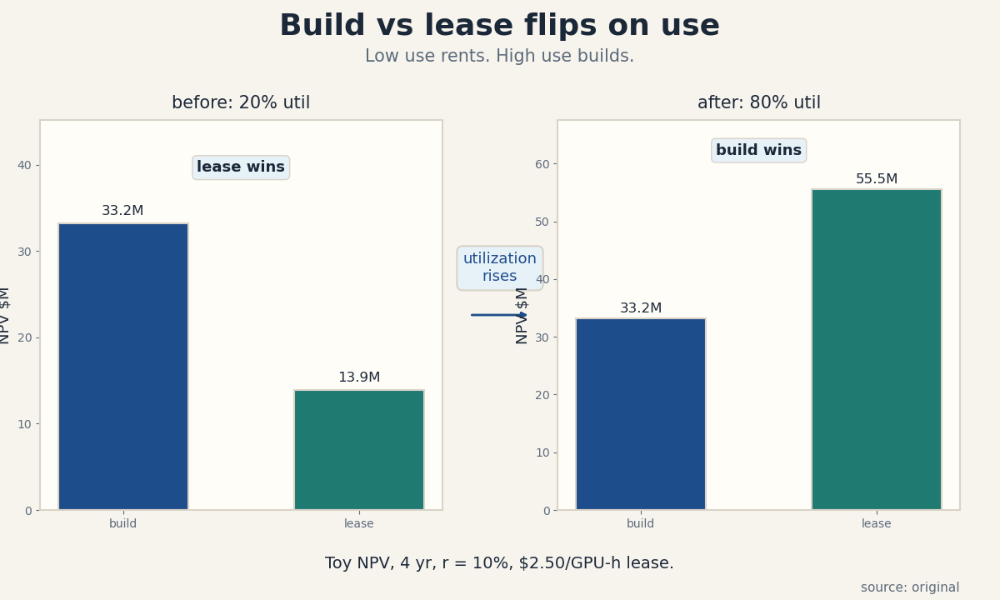

U02 · Silicon, power, and datacenters
U02 , Silicon, power, and data centers
Parent unit: mse435-U02. Bridges: P15, P23. Local remediation in
prerequisites.md (U02-R1 to U02-R3). Shared bridges linked, not
rebuilt.
Claim class: OFFICIAL-SCHEDULE (sessions 2-3: “Silicon, The GPU Economy” and “Building AI Factories at Gigawatt Scale”, materials page SRC-00). Every leaf: PLANNED / SOURCE ATTRIBUTION PENDING. Toy numbers are computed locally and labeled TOY. Speaker forecasts carry evidence labels. Economics stays economics: chip and facility facts here are cost and market facts, not system design advice.
Not-yet-understood dependency list (unit level)
- Power versus energy (U02-R1) , needed for C05-C07.
- FLOPs versus FLOP/s (U02-R2) , needed for C01, C03.
- Straight-line depreciation (U02-R3) , needed for C10.
- NPV comparison (U01-C04) , needed for C08.
mse435-U02-C01 , GPU economy
Claim class. OFFICIAL-SCHEDULE. Status. PLANNED / SOURCE ATTRIBUTION PENDING.
1. Source mapping, scope, objectives, dependencies
Maps to week 2 (“Silicon, The GPU Economy”, guests from Altimeter and Groq per SRC-00, speaker claims labeled). Scope: the market for GPU compute: who supplies, who buys, how price forms. Objective: build the per-GPU-hour cost from parts and show why utilization moves it. Dependencies: U01-C01, U01-C03, P15.
2. Motivating question and tiny toy
Motivating question: what does one GPU-hour really cost the owner, and why does the rental price move with utilization? Tiny toy: one GPU costs 25,000 dollars, lasts 4 years, draws 1.4 kW of facility power at 0.10 dollars per kWh, and needs 0.10 dollars per hour of staff and overhead.
3. Plain-language mental model
A GPU-hour has three costs: the chip itself (spread over its life), the power it burns, and the people and parts around it. The chip cost per hour falls when the GPU works more hours. Power and staff cost per hour do not. So the supply price of compute is high at low utilization and falls as the fleet fills.
4. Variables, units, shapes, assumptions
c_h: dollars per GPU-hour. capex_gpu: dollars. life: years. U: utilization, 0 to 1. Hours per year: 8760. Power: kW per GPU (facility, PUE included). Electricity: dollars per kWh. Assumptions: straight-line spread of capex over life x hours x U, constant power draw, and no salvage value.
5. Justified derivation
c_h(U) = capex_gpu / (life x 8760 x U) + kW x elec_price + staff_h. The first term is the fixed-cost spread from U01-C03 applied to a GPU. It earns its place because the chip is paid once and used U x 8760 hours per year. The power term is variable in hours but not in U per used hour: an idle GPU still draws some power, which the toy folds into the average.
6. Computed numerical example
Toy: capex 25,000, life 4, kW 1.4, elec 0.10, staff 0.10. At U = 0.40: capex part = 25,000 / (4 x 8760 x 0.40) = 25,000 / 14,016 = 1.78 dollars. Power = 0.14. Staff = 0.10. Total = 2.02 dollars per GPU-hour. At U = 0.85: capex part = 25,000 / 29,808 = 0.84 dollars. Total = 0.84 + 0.14 + 0.10 = 1.08 dollars per GPU-hour. Utilization more than doubled, and the unit cost nearly halved, all from the fixed-cost spread.
7. Algorithm and minimal implementation
def gpu_hour_cost(capex, life_yr, kw, elec, staff, u):
hours = life_yr * 8760.0 * u
return capex / hours + kw * elec + staff
print(gpu_hour_cost(25_000, 4, 1.4, 0.10, 0.10, 0.40))
print(gpu_hour_cost(25_000, 4, 0.10, 0.10, 0.10, 0.85) if False else
gpu_hour_cost(25_000, 4, 1.4, 0.10, 0.10, 0.85))
8. Correctness checks and expected output
Expected: 2.0237... then 1.0794.... Check: cost falls when
U rises. Check: as U approaches 1, the capex part approaches
capex / (life x 8760), the floor. Check: units are dollars per
hour in every term.
9. Complexity, costs, stability
O(1). The numerical risk is small, the economic risk is that real fleets mix GPU types, ages, and power draws, so one c_h hides a distribution. Report the fleet-weighted number, not a single GPU’s.
10. Nearest alternatives and selection boundaries
Alternative: market price (spot or reserved), which is what renters actually pay. Use the build-up for make-versus-buy and the market price for buy-versus-buy. The build-up wins when you own the fleet, the market price wins when you rent. Never compare your build-up cost with a competitor’s price and call the gap “margin”: their utilization and power cost differ.
11. Failure case, broken assumption, counterexample
Break constant power. Idle GPUs still draw power, so at low U the power term per used hour rises: the toy understates cost at low utilization. Counterexample: allocation by queue, not price. Inside a lab, GPUs are rationed by priority, and the “price” is wait time. The dollar cost build-up still holds for the owner, but the user feels a different price.
12. Research reading and falsifiable extension
Official anchor: week 2 session and the Groq/Altimeter readings (SRC-07/08/09), titles only. [SPEAKER CLAIM, EVIDENCE PENDING] for any guest forecast about chip prices. Falsifiable extension: track one public cloud GPU price and one utilization proxy for a quarter. Hypothesis: price moves with utilization. It fails if prices are flat while utilization swings, which points to administered pricing.
13. Assessment
Breadth recall:
- Name the three parts of the GPU-hour cost.
- Why does unit cost fall with utilization?
Deep oral ladder:
- Define GPU-hour cost without symbols.
- Toy: capex 25k, 4 yr, U = 0.5. Compute the capex part.
- Derive c_h(U) and name the fixed-cost term.
- Implement gpu_hour_cost and state the U-direction check.
- Compare build-up cost with spot price: when is each the right number?
Unfamiliar transfer: a lab rations GPUs by queue. The dollar cost per hour is 1.08 but the wait is 3 days. What is the true price to the researcher, and how would you convert wait time to dollars?
14. Lab / exercises
See labs/u02_lab.md, task 1 (cost build-up sweep over U).
15. Visual units and audit
visuals/figures/u02_gpu_cost_stack.png: before/after
utilization, one rule (“utilization rises”), computed totals
2.02 and 1.08 dollars per GPU-hour. Source: original. Alt text:
two stacked bars (capex, power, staff) with totals labeled,
the after bar is shorter. Audit: PASS.

mse435-U02-C02 , custom accelerators
Claim class. OFFICIAL-SCHEDULE. Status. PLANNED / SOURCE ATTRIBUTION PENDING.
1. Source mapping, scope, objectives, dependencies
Maps to week 2 (Groq founder session per SRC-00). Scope: when a custom chip beats a general GPU on economics. Objective: compute the volume at which non-recurring engineering (NRE) pays off. Dependencies: C01, U01-C03.
2. Motivating question and tiny toy
Motivating question: a custom chip saves 0.82 dollars per GPU-hour but costs 50M dollars to design. How many chips must you run to win? Tiny toy: NRE 50M, saving s per chip per year, fleet of N chips at 85 percent utilization.
3. Plain-language mental model
A GPU is a rented suit: fits many, fits none perfectly. A custom chip is tailored: cheaper per hour for your workload, but you pay the tailor (NRE) once. Tailoring wins when you have enough hours to spread the tailor’s bill.
4. Variables, units, shapes, assumptions
NRE: dollars, one-time. s: dollars saved per chip per hour. H: hours per chip per year = 8760 x U. N: chip count. Break-even: N x H x s >= NRE. Assumptions: the saving per hour is constant, the chip lasts the amortization period, and the software stack exists (the expensive assumption).
5. Justified derivation
Annual saving per chip = H x s. Fleet annual saving = N x H x s. Set equal to NRE and solve: N* = NRE / (H x s). Each term earns its place: H x s is the yearly return on one tailored chip, and NRE is the fixed cost to beat, exactly the U01-C03 break-even with the chip as the “unit”.
6. Computed numerical example
Toy: NRE = 50,000,000, s = 0.82 dollars per chip-hour, U = 0.85, H = 7,446 hours per year. Annual saving per chip = 7,446 x 0.82 = 6,105.72 dollars. N* = 50,000,000 / 6,105.72 = 8,189 chips. Below ~8,200 chips, buy GPUs. Above, the custom chip wins in this toy. At 20,000 chips the annual saving is 122M dollars against the 50M NRE.
7. Algorithm and minimal implementation
def custom_breakeven(nre, saving_per_hour, u=0.85):
h = 8760.0 * u
per_chip_yr = h * saving_per_hour
return nre / per_chip_yr
print(custom_breakeven(50_000_000, 0.82))
8. Correctness checks and expected output
Expected: 8189.0.... Check: N x H x s at N equals NRE.
Check: a larger s lowers N. Check: units are chips (pure
count).
9. Complexity, costs, stability
O(1). The dominant risk is not arithmetic: it is the software assumption. A chip with no mature compiler saves nothing because no workload runs at the assumed efficiency.
10. Nearest alternatives and selection boundaries
Alternative: FPGAs, which split the difference (reconfigurable, lower NRE, lower efficiency). Use them for medium volumes or changing workloads. Alternative: stay on GPUs and optimize software. The custom chip wins at high, stable, homogeneous volume, GPUs win at low or shifting volume.
11. Failure case, broken assumption, counterexample
Break the software assumption. The chip tapes out, the compiler is late, and achieved s is 0.20 instead of 0.82. N* jumps to 33,500 chips and the project never breaks even. Counterexample: the workload changes (new model architecture) mid-life. The tailored chip is now wrong-shaped, and the GPU fleet adapts with a software update.
12. Research reading and falsifiable extension
Official anchor: SRC-09 (Groq founder interview), title only, [SPEAKER CLAIM, EVIDENCE PENDING]. Falsifiable extension: pick one announced custom chip and track its claimed saving versus its deployment volume over two years. Hypothesis: announced savings assume volumes the firm never reaches. It fails if the fleet crosses N* on schedule.
13. Assessment
Breadth recall:
- What is NRE and why is it fixed?
- Write the break-even chip count formula.
Deep oral ladder:
- Define the custom-chip bet without jargon.
- Toy: NRE 10M, s = 0.50, U = 0.85. Compute N*.
- Derive N* and name the per-chip yearly return.
- Implement custom_breakeven and state the equality check.
- Compare custom ASIC with FPGA: where is each the right call?
Unfamiliar transfer: your workload is 60 percent one model family and 40 percent shifting research. The N* math says build. What qualitative factor overrides the math, and how would you quantify it?
14. Lab / exercises
See labs/u02_lab.md, task 2 (N* sweep over s and NRE).
15. Visual units and audit
Table in the lesson (comparison of values: GPU vs custom vs FPGA on NRE, per-hour cost, flexibility). Logged as an honest table medium.
mse435-U02-C03 , memory/interconnect bottlenecks
Claim class. OFFICIAL-SCHEDULE. Status. PLANNED / SOURCE ATTRIBUTION PENDING.
1. Source mapping, scope, objectives, dependencies
Maps to weeks 2-3 (silicon and infrastructure sessions). Scope: why chips wait on data, not on math. Objective: apply the roofline rule to classify a workload as memory-bound or compute-bound. Dependencies: P15 (roofline, arithmetic intensity), C01.
2. Motivating question and tiny toy
Motivating question: a GPU offers 300 TFLOP/s but your decode step runs at 40 TFLOP/s. Where did the speed go? Tiny toy: peak 300 TFLOP/s, memory bandwidth 2 TB/s, workload intensity 100 FLOP per byte.
3. Plain-language mental model
A chip is a kitchen: FLOPs are the cooks, bandwidth is the door the ingredients come through. If the door is narrow, fast cooks stand idle. Arithmetic intensity (FLOPs per byte) says how much cooking each delivery supports. The roofline says you get the slower of the cooks and the door.
4. Variables, units, shapes, assumptions
Peak: FLOP/s. Bandwidth B: bytes/s. Intensity I: FLOP/byte. Attainable = min(peak, I x B), in FLOP/s. Ridge point I* = peak / B. Assumptions: steady state (no startup costs), and the workload’s I is known and constant.
5. Justified derivation
Each byte moved can feed at most I FLOPs, so B bytes/s feed at most I x B FLOP/s. The chip cannot exceed its peak either. The minimum of the two binds. The ridge point is where they meet: I = peak / B. Below I the door binds (memory-bound), above it the cooks bind (compute-bound). Each term earns its place: I x B converts a data rate into a compute rate.
6. Computed numerical example
Toy: peak = 300 x 10^12 FLOP/s, B = 2 x 10^12 bytes/s. Ridge: I* = 300/2 = 150 FLOP/byte. Workload A: I = 100. Attainable = min(300, 100 x 2) = 200 TFLOP/s, memory-bound, running at 67 percent of peak. Workload B: I = 500. Attainable = min(300, 1000) = 300 TFLOP/s, compute-bound. The decode step at I = 40 gives 80 TFLOP/s: the door, not the cooks.
7. Algorithm and minimal implementation
def roofline(peak_flops, bw_bytes, intensity):
attainable = min(peak_flops, intensity * bw_bytes)
bound = "memory-bound" if intensity * bw_bytes < peak_flops \
else "compute-bound"
return attainable, bound
print(roofline(300e12, 2e12, 100))
print(roofline(300e12, 2e12, 500))
8. Correctness checks and expected output
Expected: (2e14, 'memory-bound') then (3e14,
'compute-bound'). Check: at I = I* both formulas agree.
Check: attainable never exceeds peak. Check units: FLOP/s.
9. Complexity, costs, stability
O(1). The practical cost is the measurement of I: real workloads have mixed phases, and one I mislabels the run. Profile per phase (prefill vs decode) instead of averaging.
10. Nearest alternatives and selection boundaries
Alternative: quantization, which raises effective I by moving fewer bytes per FLOP. Use it when memory-bound. Alternative: bigger batches, which raise I for decode. The roofline wins as the diagnostic, the fix depends on which side binds.
11. Failure case, broken assumption, counterexample
Break steady state. Short kernels never reach the roofline, launch overhead dominates and the model overpredicts. Counterexample: interconnect-bound training. When GPUs sync gradients, the network (not HBM) is the door, and the roofline needs the network bandwidth in B, not the memory bandwidth.
12. Research reading and falsifiable extension
Read P15 on roofline assumptions. Falsifiable extension: profile one inference server’s prefill and decode phases. Hypothesis: decode is memory-bound, prefill compute-bound. It fails if both phases sit on the same side, which would point to a misconfigured batch or clock.
13. Assessment
Breadth recall:
- State the roofline rule in one sentence.
- What is the ridge point?
Deep oral ladder:
- Define arithmetic intensity without symbols.
- Toy: peak 100, B = 1, I = 50 (in consistent units). Classify.
- Derive I* and explain what each side means.
- Implement roofline and state the never-exceeds-peak check.
- Compare with quantization as a fix: which side does it help?
Unfamiliar transfer: training throughput stalls when you add GPUs, but single-GPU roofline says compute-bound. Name the missing door and how you would measure it.
14. Lab / exercises
See labs/u02_lab.md, task 3 (roofline sweep over intensity).
15. Visual units and audit
ASCII in the lesson (medium ladder: the claim is a short trace). The roofline trace: intensity 40 -> 80 TFLOP/s (memory), 100 -> 200 (memory), 150 -> 300 (ridge), 500 -> 300 (compute). Logged as an honest ASCII medium.
mse435-U02-C04 , infrastructure lifecycle
Claim class. OFFICIAL-SCHEDULE. Status. PLANNED / SOURCE ATTRIBUTION PENDING.
1. Source mapping, scope, objectives, dependencies
Maps to week 3 (Crusoe gigawatt-scale session, SRC-00). Scope: the phases of a data-center build and their cash timing. Objective: lay out the lifecycle and show why decisions made in planning bind operations for years. Dependencies: U01-C04, C01.
2. Motivating question and tiny toy
Motivating question: why can a firm not just “add more GPUs” next quarter? Tiny toy: a 100 MW site with four phases and their durations and cash.
3. Plain-language mental model
A data center is a ship: planned on paper, built over years, then sailed for a decade. Choices poured in concrete (power capacity, cooling type) cannot be revised cheaply. The lifecycle is plan, build, operate, refresh, and each phase’s bill arrives on its own schedule.
4. Variables, units, shapes, assumptions
Phases: plan (months), build (months), operate (years), refresh (year). Cash: capex during build, opex during operate. Assumptions: the plan’s demand forecast holds well enough that the built capacity is useful, and refresh is a discrete event.
5. Justified derivation
Total lifecycle cost = plan cost + build capex + sum of yearly opex over operate + refresh capex, all discounted to present value (U01-C04). The derivation uses discount arithmetic. The insight: late costs matter less. A dollar of build capex in year 2 at 10 percent costs 0.83 dollars today, while a dollar of opex in year 8 costs 0.47 dollars today. Late costs matter less, which is why cheap-to-build, expensive-to-run can win on NPV and lose on sticker price.
6. Computed numerical example
Toy 100 MW site: plan 5M over 6 months, build 400M over 18 months, operate 40M per year for 6 years, refresh 120M in year 7. Undiscounted total = 5 + 400 + 240 + 120 = 765M. At 10 percent, with build centered at year 1.5 and opex years 2-7: PV build = 400 / 1.1^1.5 = 346.7M. PV opex = 40 x annuity factor for 6 years starting year 2 = 40 x 4.3553 / 1.1 = 158.4M. PV refresh = 120 / 1.1^7 = 61.6M. PV plan = 5M. Total PV = 571.7M dollars. The refresh, though large in sticker terms, is the smallest PV line.
7. Algorithm and minimal implementation
def pv(x, r, t):
return x / (1 + r) ** t
def lifecycle_pv(plan, build, build_t, opex, op_years, op_start,
refresh, refresh_t, r=0.10):
total = pv(plan, r, 0.25) + pv(build, r, build_t)
total += sum(pv(opex, r, op_start + i)
for i in range(op_years))
total += pv(refresh, r, refresh_t)
return total
print(lifecycle_pv(5e6, 400e6, 1.5, 40e6, 6, 2, 120e6, 7))
8. Correctness checks and expected output
Expected: 571,700,000 approximately. Check: at r = 0 the
result equals the undiscounted 765M. Check: each term is
positive and the refresh term is the smallest. Check units:
dollars.
9. Complexity, costs, stability
O(years). The model is simple, the forecast inside it (demand for 7 years) is not. Run the lifecycle math under 3 demand paths before trusting one number.
10. Nearest alternatives and selection boundaries
Alternative: lease the whole lifecycle (C08), which converts the phase cash flows into a flat rate. Use it when demand is uncertain. The lifecycle build wins when demand is certain and long. Never compare undiscounted totals across different timings.
11. Failure case, broken assumption, counterexample
Break the demand forecast. The site is built for 100 MW of AI training, but inference (different power and network shape) dominates instead. The concrete is wrong-shaped: power is right, networking is wrong. Counterexample: technology refresh mid-build. A new GPU generation lands during the 18 month build, and the planned racks are obsolete before first power-on.
12. Research reading and falsifiable extension
Official anchor: SRC-10/11/12 (Crusoe session and data-center primer), titles only. Falsifiable extension: collect announced versus actual online dates for five data-center builds. Hypothesis: builds slip by 6+ months on average. It fails if most hit their dates, which would shorten the planning hedge the lifecycle model recommends.
13. Assessment
Breadth recall:
- Name the four phases.
- Why does discounting shrink the refresh line most?
Deep oral ladder:
- Define lifecycle cost without symbols.
- Toy: build 100M at year 1, opex 10M years 2-3, r = 10 percent. Compute PV.
- Explain why late costs matter less, with the discount factor.
- Implement lifecycle_pv and state the r = 0 check.
- Compare building with leasing the lifecycle: when does each win?
Unfamiliar transfer: a new chip generation is announced for next year, mid-way through your build. Name the two options (wait vs proceed) and the one number that decides between them.
14. Lab / exercises
See labs/u02_lab.md, task 4 (lifecycle PV under two demand
paths).
15. Visual units and audit
Table in the lesson (phase, duration, cash, PV). Logged as an honest table medium.
mse435-U02-C05 , power constraints
Claim class. OFFICIAL-SCHEDULE. Status. PLANNED / SOURCE ATTRIBUTION PENDING.
1. Source mapping, scope, objectives, dependencies
Maps to week 3 (gigawatt-scale session). Scope: power as the binding constraint on AI infrastructure. Objective: convert a power budget into a GPU count and show what happens when demand exceeds the grid. Dependencies: U02-R1, C01.
2. Motivating question and tiny toy
Motivating question: the grid offers 100 MW. How many GPUs can you run, and what happens to the 40 MW of demand that does not fit? Tiny toy: 1.4 kW of facility power per GPU, 100 MW limit, 140 MW of demand.
3. Plain-language mental model
Power is the walls of the room. You can arrange the furniture (GPUs, cooling, network) many ways, but you cannot put more furniture than the walls allow. When demand exceeds the walls, some demand waits: in queues, in other regions, or in next year’s build.
4. Variables, units, shapes, assumptions
P_site: MW available. p_gpu: kW per GPU including PUE overhead. N_max = P_site x 1000 / p_gpu, a pure count. Demand D in MW. Served = min(D, P_site). Assumptions: power draw is flat at the rated value, and no demand response (no voluntary throttling).
5. Justified derivation
Each GPU needs p_gpu kW of facility power. N GPUs need N x p_gpu kW. The constraint N x p_gpu <= P_site x 1000 gives N_max directly. The served quantity is the minimum of demand and capacity, which is the same rationing logic as U01-C01’s price cap, except the rationing is physical, not priced.
6. Computed numerical example
Toy: P_site = 100 MW, p_gpu = 1.4 kW. N_max = 100 x 1000 / 1.4 = 71,428 GPUs. Demand before: 70 MW, served 70, wait 0. Demand after: 140 MW, served 100, wait 40 MW, which is 28,571 GPU-equivalents waiting. The site did not get slower, it got full, and the demand curve now has a queue attached.
7. Algorithm and minimal implementation
def site_capacity(mw, kw_per_gpu):
return int(mw * 1000 / kw_per_gpu)
def serve(demand_mw, limit_mw):
served = min(demand_mw, limit_mw)
return served, demand_mw - served
print(site_capacity(100, 1.4))
print(serve(70, 100))
print(serve(140, 100))
8. Correctness checks and expected output
Expected: 71428, (70, 0), (100, 40). Check: served +
waiting equals demand. Check: N_max x p_gpu <= P_site x 1000.
Check units: MW in, MW out.
9. Complexity, costs, stability
O(1). The hidden cost is time: grid interconnection queues run years, so the “limit” is really a schedule. Model the limit as a function of year, not a constant.
10. Nearest alternatives and selection boundaries
Alternative: behind-the-meter generation (gas turbines, solar plus storage), which raises the limit at a cost. Use it when the grid queue is the binding delay. The grid limit wins as the planning number when interconnection is the actual path. Alternative: demand response (throttle on grid stress), which softens the wall. Use it where the grid operator pays for flexibility.
11. Failure case, broken assumption, counterexample
Break “power available means power usable”. Permits, water for cooling, and community consent can block a site that has grid capacity on paper. Counterexample: stranded power. A site with cheap gas but no grid connection has power and no customers, the constraint is transmission, not generation.
12. Research reading and falsifiable extension
Official anchor: week 3 session (Lochmiller/Crusoe), title only, [SPEAKER CLAIM, EVIDENCE PENDING]. Falsifiable extension: track announced versus energized dates for five large sites. Hypothesis: power delivery, not construction, sets the online date. It fails if construction finishes last in most cases.
13. Assessment
Breadth recall:
- Convert 100 MW at 1.4 kW/GPU to a GPU count.
- What happens to demand above the limit?
Deep oral ladder:
- Define the power constraint without symbols.
- Toy: 50 MW site, 2 kW/GPU. Compute N_max.
- Derive served = min(D, limit) and name the rationing.
- Implement serve and state the sum check.
- Compare grid power with behind-the-meter: when does each bind?
Unfamiliar transfer: your site has 100 MW of grid power but the county caps water use, and your cooling needs exceed the cap. Which constraint binds, and what are your two moves?
14. Lab / exercises
See labs/u02_lab.md, task 5 (capacity from power budgets).
15. Visual units and audit
visuals/figures/u02_power_binding.png: before/after demand,
one rule (“demand exceeds grid”), served 70 then 100 MW with
40 MW waiting, computed. Source: original. Alt text: two bars
per panel (served, unserved) against a dashed grid-limit line,
the after panel shows an orange unserved block. Audit: PASS.

mse435-U02-C06 , cooling
Claim class. OFFICIAL-SCHEDULE. Status. PLANNED / SOURCE ATTRIBUTION PENDING.
1. Source mapping, scope, objectives, dependencies
Maps to week 3. Scope: removing waste heat, and what it costs. Objective: compare air and liquid cooling on capex and opex with a payback calculation. Dependencies: U02-R1, U01-C04.
2. Motivating question and tiny toy
Motivating question: liquid cooling costs 70k dollars more per rack but burns less power. Does it pay? Tiny toy: 100 kW IT rack, air PUE 1.5 at 150k capex, liquid PUE 1.15 at 220k capex, power at 0.10 dollars per kWh.
3. Plain-language mental model
Every watt of compute becomes a watt of heat. Cooling moves that heat outside. Air is cheap to install and thirsty to run. Liquid is dear to install and frugal to run. PUE (total power over IT power) scores the thirst: 1.5 means half a watt of overhead per watt of compute.
4. Variables, units, shapes, assumptions
PUE: pure number >= 1. IT load: kW. Total power = IT x PUE. Annual energy cost = total kW x 8760 x elec price. Payback = extra capex / annual saving, in years. Assumptions: the rack runs full, power price constant, and maintenance differences ignored.
5. Justified derivation
Air total: 100 x 1.5 = 150 kW. Liquid total: 100 x 1.15 = 115 kW. Saving: 35 kW. Annual saving = 35 x 8760 x 0.10 = 30,660 dollars. Extra capex = 70,000. Payback = 70,000 / 30,660 = 2.28 years. The derivation is a ratio: the one-time premium over the yearly dividend. Each term earns its place: PUE converts IT load to metered load, and the meter times the price is the bill.
6. Computed numerical example
Toy above: payback 2.28 years. Over a 6-year rack life, liquid saves 6 x 30,660 - 70,000 = 113,960 dollars per rack versus air. At 1,000 racks the saving is 114M dollars, which is why gigawatt-scale builds (C07) choose liquid despite the capex.
7. Algorithm and minimal implementation
def cooling_payback(it_kw, pue_a, cx_a, pue_b, cx_b, elec=0.10):
kw_a = it_kw * pue_a
kw_b = it_kw * pue_b
saving_yr = (kw_a - kw_b) * 8760.0 * elec
return (cx_b - cx_a) / saving_yr
print(cooling_payback(100, 1.50, 150_000, 1.15, 220_000))
8. Correctness checks and expected output
Expected: 2.283.... Check: a lower PUE must give positive
saving. Check: payback falls when power price rises. Check
units: years.
9. Complexity, costs, stability
O(1). The ignored term is water: liquid cooling can use less electricity but more water, and water permits (C05) can veto the choice. Add the water constraint before recommending.
10. Nearest alternatives and selection boundaries
Alternative: immersion cooling (tanks of dielectric fluid), which beats liquid cold plates on density but complicates service. Use it at extreme density. Alternative: free cooling (outside air), which cuts opex where climate allows. Air wins at small scale and mild climate, liquid wins at high density and high power prices.
11. Failure case, broken assumption, counterexample
Break “the rack runs full”. At 40 percent utilization the annual saving halves and payback doubles to 4.6 years, past many refresh cycles. Counterexample: a site with free cold air and cheap power makes air win even at scale, the PUE gap does not pay for itself.
12. Research reading and falsifiable extension
Official anchor: SRC-11 (“A Primer on AI Data Centers”), title only. Falsifiable extension: survey five new builds for cooling choice and power price. Hypothesis: liquid adoption rises with power price. It fails if cheap-power sites also choose liquid, which would point to density, not price, as the driver.
13. Assessment
Breadth recall:
- Define PUE.
- Write the payback formula.
Deep oral ladder:
- Define the cooling trade without symbols.
- Toy: IT 50 kW, PUE 1.6 vs 1.2, capex gap 40k, power 0.12. Compute payback.
- Derive payback as premium over dividend.
- Implement cooling_payback and state the direction check.
- Compare liquid with immersion: when is each right?
Unfamiliar transfer: the county caps your water use below what liquid cooling needs. Name your two moves and the cost of each.
14. Lab / exercises
See labs/u02_lab.md, task 6 (payback grid over power price
and utilization).
15. Visual units and audit
visuals/figures/u02_cooling_tradeoff.png: before/after
cooling switch, one rule (“switch cooling”), computed capex,
power, and energy cost per option. Source: original. Alt text:
two panels of three bars (capex, power, energy cost), the
after panel shows higher capex and lower power bars. Audit:
PASS.

mse435-U02-C07 , gigawatt scale
Claim class. OFFICIAL-SCHEDULE. Status. PLANNED / SOURCE ATTRIBUTION PENDING.
1. Source mapping, scope, objectives, dependencies
Maps to week 3 (“Building AI Factories at Gigawatt Scale”, Chase Lochmiller, Crusoe, per SRC-00). Scope: what a 1 GW AI site means in physical and dollar terms. Objective: convert gigawatts to GPUs, homes, and dollars on a toy. Dependencies: U02-R1, C05.
2. Motivating question and tiny toy
Motivating question: how big is a gigawatt, really? Tiny toy: 1 GW = 1,000 MW, 1.4 kW per GPU of facility power, 1.25 kW per average home, 10 dollars per watt of build cost.
3. Plain-language mental model
A gigawatt is a power plant wearing a data center costume. It powers roughly three quarters of a million GPUs, or about as many homes as a large city. At this scale the site is not a tenant of the grid, it is a grid planning event.
4. Variables, units, shapes, assumptions
1 GW = 10^9 W = 1,000 MW. GPU count = 10^6 kW / p_gpu. Home count = 10^6 kW / kw_home. Build cost = $/W x 10^9. Assumptions: flat power draw, average home at 1.25 kW, and build cost per watt all-in (land, power, building, cooling).
5. Justified derivation
GPUs: 1,000,000 kW / 1.4 kW = 714,285 GPUs. Homes: 1,000,000 / 1.25 = 800,000 homes. Build: 10 x 10^9 = 10,000,000,000 dollars. The conversions are unit changes, the economics enters in the $/W figure, which bundles every lifecycle cost (C04) into one rate.
6. Computed numerical example
Toy: 1 GW site, 10 $/W build, 0.08 $/kWh power. Build = 10B dollars. Annual energy = 10^6 kW x 8760 x 0.08 = 700.8M dollars per year. Over 10 years undiscounted, energy is 7B, comparable to the build. The site’s two big numbers are concrete and electrons, in that order.
7. Algorithm and minimal implementation
def gw_scale(dollars_per_w=10.0, kw_per_gpu=1.4, kw_home=1.25,
elec=0.08):
kw = 1e6
return {
"gpus": kw / kw_per_gpu,
"homes": kw / kw_home,
"build_usd": dollars_per_w * 1e9,
"energy_usd_yr": kw * 8760.0 * elec,
}
print(gw_scale())
8. Correctness checks and expected output
Expected: gpus ~714,285.7, homes 800,000.0, build 10B, energy ~700.8M. Check: gpus x kw_per_gpu = 10^6. Check: the energy bill scales linearly with the power price. Check units: dollars and counts.
9. Complexity, costs, stability
O(1). The $/W figure is the whole argument, a 30 percent error there swamps every other refinement. Source it or bound it, never assert it.
10. Nearest alternatives and selection boundaries
Alternative: several 200 MW sites instead of one 1 GW site, which diversifies grid, water, and permitting risk at some cost in scale economy. Use distributed sites when any single constraint (water, permits, grid) binds. The gigawatt site wins when one location clears all constraints and scale economies dominate.
11. Failure case, broken assumption, counterexample
Break “one location clears all constraints”. The grid offers 1 GW but the water permit covers half the cooling need, the site is really 500 MW with a 1 GW headline. Counterexample: single-site risk. One outage, one storm, or one regulatory change idles the whole gigawatt, the distributed alternative degrades gracefully.
12. Research reading and falsifiable extension
Official anchor: week 3 session, [SPEAKER CLAIM, EVIDENCE PENDING] for any Crusoe scale or cost claim. Falsifiable extension: track three announced gigawatt-scale builds to energization. Hypothesis: at least one halves in scope or slips two years. It fails if all three deliver as announced, which would update the base rate on mega-build execution.
13. Assessment
Breadth recall:
- Convert 1 GW to GPUs at 1.4 kW each.
- Name the two big cost lines of a gigawatt site.
Deep oral ladder:
- Define gigawatt scale without symbols.
- Toy: 500 MW, 2 kW/GPU. Compute the GPU count.
- Derive the build-cost conversion and name the $/W bundle.
- Implement gw_scale and state the product check.
- Compare one 1 GW site with five 200 MW sites: when does each win?
Unfamiliar transfer: a utility offers 1 GW but only if you take it as interruptible load (they can cut you 5 percent of hours). Price your answer: what discount per kWh makes the interruption worth it for training? For inference?
14. Lab / exercises
See labs/u02_lab.md, task 7 (scale conversions and the
interruptible discount).
15. Visual units and audit
Table in the lesson (GW to GPUs, homes, dollars). Logged as an honest table medium, the power-binding plate (C05) already covers the state change.
mse435-U02-C08 , build/lease tradeoffs
Claim class. OFFICIAL-SCHEDULE. Status. PLANNED / SOURCE ATTRIBUTION PENDING.
1. Source mapping, scope, objectives, dependencies
Maps to weeks 2-3. Scope: own the data center or rent the GPUs. Objective: run the NPV comparison and find the utilization crossover. Dependencies: U01-C04, C01.
2. Motivating question and tiny toy
Motivating question: at what utilization does building beat renting? Tiny toy: 1,000 GPUs, build 30M capex + 1M per year, lease 2.50 dollars per GPU-hour, 4 years, r = 10 percent.
3. Plain-language mental model
Building buys cheap hours in bulk but pays whether the GPUs work or sleep. Renting pays only for hours used but at a premium. Low utilization wastes the bulk discount, high utilization harvests it. The crossover is where the waste equals the premium.
4. Variables, units, shapes, assumptions
Build PV = capex + maint x annuity(r, T). Lease PV = N x 8760 x U x lease_rate x annuity(r, T). Annuity factor = (1 - (1+r)^(-T)) / r. Assumptions: lease rate flat for T years, utilization constant, same GPUs both ways.
5. Justified derivation
Set build PV = lease PV and solve for U: U* = (capex + maint x A) / (N x 8760 x lease_rate x A), where A is the annuity factor. The A cancels only if maint is zero, with maintenance it stays. Each term earns its place: the numerator is the owned cost in present dollars, the denominator converts the lease rate to the same present dollars at full utilization.
6. Computed numerical example
Toy: A at 10 percent, 4 years = 3.1699. Build PV = 30M + 1M x 3.1699 = 33.17M. At U = 0.20: lease hours = 1,000 x 8760 x 0.20 = 1.752M per year, lease PV = 1.752M x 2.50 x 3.1699 = 13.88M. Lease wins by 19.29M. At U = 0.80: lease PV = 55.54M. Build wins by 22.37M. Crossover: U* = 33.17M / (1,000 x 8760 x 2.50 x 3.1699) = 33.17 / 69.42 = 0.478. Build wins above ~48 percent utilization in this toy.
7. Algorithm and minimal implementation
def annuity(r, t):
return (1 - (1 + r) ** (-t)) / r
def build_lease(capex, maint, n, lease_rate, u, r=0.10, t=4):
a = annuity(r, t)
build = capex + maint * a
lease = n * 8760.0 * u * lease_rate * a
return build, lease
b, l = build_lease(30e6, 1e6, 1000, 2.50, 0.20)
print(b / 1e6, l / 1e6)
b, l = build_lease(30e6, 1e6, 1000, 2.50, 0.80)
print(b / 1e6, l / 1e6)
8. Correctness checks and expected output
Expected: (33.169..., 13.884...) then (33.169...,
55.536...). Check: build PV does not move with U. Check:
lease PV scales linearly with U. Check: U* = 0.478 lies
between the two cases, consistent with the flip.
9. Complexity, costs, stability
O(1). The fragile inputs are the lease rate path (it usually falls) and utilization (it is a forecast, C11 territory). Always quote U* alongside the decision.
10. Nearest alternatives and selection boundaries
Alternative: colocation (rent the building, own the GPUs), which splits the difference. Use it when power and space are the constraint but GPU choice must stay yours. The binary build/lease wins for clarity, colocation wins in practice when the site, not the chip, is the question.
11. Failure case, broken assumption, counterexample
Break constant utilization. A training lab with bursty demand (0 percent then 100 percent) has average U = 50 percent but should rent the bursts and own the base. The single-U math misleads, split the load into base and burst first. Counterexample: lease rates fall 20 percent per year. The flat-rate toy overstates lease PV and the true U is higher.
12. Research reading and falsifiable extension
Read U01-C04 on NPV. Falsifiable extension: track one neocloud’s build announcements and its reported utilization. Hypothesis: builds follow sustained U above their U*. It fails if builds precede the utilization, which would point to strategic preemption rather than cost logic.
13. Assessment
Breadth recall:
- Write the build PV and lease PV formulas.
- Why does the crossover sit where it does?
Deep oral ladder:
- Define the trade without symbols.
- Toy: capex 10M, no maintenance, 500 GPUs, lease 3.00, r = 10 percent, T = 4. Compute U*.
- Derive U* and name the canceling term.
- Implement build_lease and state the two direction checks.
- Compare with colocation: what does it split?
Unfamiliar transfer: demand is 0 percent half the year and 100 percent the other half. The U* math says build. Show the split (base + burst) that overturns it.
14. Lab / exercises
See labs/u02_lab.md, task 8 (U* sweep over lease rates).
15. Visual units and audit
visuals/figures/u02_build_lease.png: before/after
utilization, one rule (“utilization rises”), computed NPVs
33.2M vs 13.9M then 33.2M vs 55.5M, with the winner labeled.
Source: original. Alt text: two panels of two bars (build,
lease), the cheaper bar flips between panels. Audit: PASS.

mse435-U02-C09 , utilization
Claim class. OFFICIAL-SCHEDULE. Status. PLANNED / SOURCE ATTRIBUTION PENDING.
1. Source mapping, scope, objectives, dependencies
Maps to weeks 2-3. Scope: the most reused ratio in infrastructure economics. Objective: define utilization, compute effective cost per used hour, and show why 100 percent is not the target. Dependencies: C01, U01-C03.
2. Motivating question and tiny toy
Motivating question: the sticker says 2.02 dollars per GPU-hour, but the fleet runs at 40 percent. What does a used hour really cost? Tiny toy: sticker cost 2.02 at 40 percent utilization.
3. Plain-language mental model
Utilization is the share of bought hours that do work. The sticker price assumes every hour works. The effective price divides by utilization: at 40 percent, each working hour carries 2.5 idle hours on its back. Chasing 100 percent sounds thrifty until the queue for GPUs becomes the product.
4. Variables, units, shapes, assumptions
U: used hours / total hours, 0 to 1. Sticker c: dollars per clock hour. Effective e = c / U: dollars per used hour. Assumptions: idle hours cost the same as the sticker (true for owned fleets, false for pure rental), and used hours are homogeneous.
5. Justified derivation
Total cost = c x total hours. Used hours = U x total hours. Cost per used hour = c x total / (U x total) = c / U. The total cancels, the ratio is all that matters. Each term earns its place: c is what you pay, U is what you get.
6. Computed numerical example
Toy: sticker 2.02 dollars per GPU-hour. At U = 0.40: effective = 2.02 / 0.40 = 5.06 dollars per used hour. At U = 0.85: effective = 1.08 / 0.85 = 1.27 dollars per used hour. Note the sticker itself came from C01 at each U, the effective cost compounds the spread twice, which is why low utilization hurts more than it looks.
7. Algorithm and minimal implementation
def effective_cost(sticker, u):
return sticker / u
print(effective_cost(2.02, 0.40))
print(effective_cost(1.08, 0.85))
8. Correctness checks and expected output
Expected: 5.05 then 1.2705.... Check: effective >=
sticker always. Check: as U approaches 1, effective
approaches sticker. Check units: dollars per used hour.
9. Complexity, costs, stability
O(1). The trap is Goodhart: a team rewarded for U defers maintenance and queues research to keep GPUs busy. Measure useful utilization (hours on priority work), not raw busy.
10. Nearest alternatives and selection boundaries
Alternative: overprovision plus spot sales, which monetizes idle hours instead of eliminating them. Use it when external demand exists. The utilization target wins for internal fleets, the spot market wins when idle hours have a buyer.
11. Failure case, broken assumption, counterexample
Break “idle hours are waste”. A research lab keeps 20 percent headroom so a new idea runs today, not next week. The option value of idle capacity exceeds its cost. Counterexample: 100 percent utilization with a queue. Every job waits, and the wait costs researchers more than the saved GPUs.
12. Research reading and falsifiable extension
Read P23 on utilization. Falsifiable extension: survey three labs on target utilization and queue delay. Hypothesis: labs with higher U report longer queues. It fails if queues are flat in U, which would suggest scheduling, not capacity, is the problem.
13. Assessment
Breadth recall:
- Write the effective-cost formula.
- Why is 100 percent utilization not the target?
Deep oral ladder:
- Define utilization without symbols.
- Toy: sticker 3.00, U = 0.60. Compute effective cost.
- Derive e = c / U and name the canceling term.
- Implement effective_cost and state the ordering check.
- Compare raising U with selling spot: when is each right?
Unfamiliar transfer: your bonus is tied to fleet utilization. Name two ways you could hit 95 percent while hurting the lab, and the metric change that stops each.
14. Lab / exercises
See labs/u02_lab.md, task 9 (effective cost and queue
trade-off).
15. Visual units and audit
Table in the lesson (sticker vs effective at four U levels). Logged as an honest table medium.
mse435-U02-C10 , depreciation
Claim class. OFFICIAL-SCHEDULE. Status. PLANNED / SOURCE ATTRIBUTION PENDING.
1. Source mapping, scope, objectives, dependencies
Maps to weeks 2-3. Scope: spreading hardware cost over its useful life on the books. Objective: build a depreciation schedule and convert it to a per-hour capital charge. Dependencies: U02-R3, C01.
2. Motivating question and tiny toy
Motivating question: a 200,000-dollar server lasts 4 years. What does it cost “per year” on the books, and per GPU-hour? Tiny toy: straight-line over 4 years, 8 GPUs, 85 percent utilization.
3. Plain-language mental model
Depreciation is the accounting clock on an asset. Buy once, then each year the books record a slice of the cost as used up. Straight-line cuts equal slices. The per-hour charge is the yearly slice divided by the hours the asset works.
4. Variables, units, shapes, assumptions
C: cost dollars. T: life years. Annual charge = C / T. Book value at year t: C x (1 - t / T). Per-hour charge = (C / T) / (GPUs x 8760 x U). Assumptions: zero salvage, constant use, and the accounting life equals the useful life.
5. Justified derivation
Straight-line divides C into T equal parts by definition of the method. The book value falls linearly to zero at T. The per-hour charge divides the yearly slice by yearly working hours. Each term earns its place: the slice is the cost of one year of the asset, and the hours convert it to the billing unit.
6. Computed numerical example
Toy: C = 200,000, T = 4. Annual charge = 50,000 dollars. Book values: year 0: 200,000, year 1: 150,000, year 2: 100,000, year 3: 50,000, year 4: 0. Per GPU-hour at 85 percent: 50,000 / (8 x 8760 x 0.85) = 50,000 / 59,568 = 0.839 dollars. This matches the capex part in C01, which used 25,000 per GPU (200,000 / 8): 25,000 / (4 x 8760 x 0.85) = 0.839. The two routes agree, as they must.
7. Algorithm and minimal implementation
def schedule(cost, life):
annual = cost / life
return [cost - annual * t for t in range(life + 1)]
def hourly_charge(cost, life, gpus, u=0.85):
return (cost / life) / (gpus * 8760.0 * u)
print(schedule(200_000, 4))
print(hourly_charge(200_000, 4, 8))
8. Correctness checks and expected output
Expected: [200000.0, 150000.0, 100000.0, 50000.0, 0.0] then
0.8394.... Check: the schedule ends at zero. Check: the
hourly charge matches C01’s capex part. Check units: dollars
per hour.
9. Complexity, costs, stability
O(T). The economic risk: tax life and useful life differ. GPUs may be economically obsolete in 3 years while the books say 4, the per-hour charge then understates true cost.
10. Nearest alternatives and selection boundaries
Alternative: accelerated depreciation (double-declining), which front-loads the charge. Use it for tax when allowed, it does not change cash, only its timing. Straight-line wins for internal cost math because it is simple and matches steady use. Never confuse the book charge with cash: the cash left in year 0.
11. Failure case, broken assumption, counterexample
Break “accounting life equals useful life”. A new GPU generation halves your card’s resale value in year 2. The books still say 100,000 at year 2, but the economic value is far less, decisions on the book number overkeep old iron. Counterexample: fully depreciated but working GPUs. Book value zero, economic value positive, the per-hour charge should be opportunity cost, not zero.
12. Research reading and falsifiable extension
Read P23 on capital expense. Falsifiable extension: compare resale prices of 3-year-old GPUs with their book values. Hypothesis: market value falls faster than straight-line. It fails if resale tracks the books, which would validate the 4-year life.
13. Assessment
Breadth recall:
- Write the straight-line schedule.
- Why does the book charge differ from cash?
Deep oral ladder:
- Define depreciation without symbols.
- Toy: cost 90,000, life 3. Give the schedule.
- Derive the per-hour charge and name each division.
- Implement schedule and state the ends-at-zero check.
- Compare straight-line with accelerated: what changes, what does not?
Unfamiliar transfer: your GPUs are fully depreciated but still earn 2 dollars per hour on spot. Finance says their cost is zero. What is the right cost for a keep-vs-retire decision, and why?
14. Lab / exercises
See labs/u02_lab.md, task 10 (schedule vs resale).
15. Visual units and audit
Table in the lesson (year, book value, charge). Logged as an honest table medium.
mse435-U02-C11 , supply concentration
Claim class. OFFICIAL-SCHEDULE. Status. PLANNED / SOURCE ATTRIBUTION PENDING.
1. Source mapping, scope, objectives, dependencies
Maps to week 2 (GPU supply). Scope: measuring how few hands hold the supply. Objective: compute the HHI concentration index on a toy and name its limits. Dependencies: P01.
2. Motivating question and tiny toy
Motivating question: one firm makes most AI accelerators. How concentrated is “most”, and when should you worry? Tiny toy: market shares 70, 15, 10, 5 percent.
3. Plain-language mental model
Concentration is the opposite of choice. The HHI index adds the squares of market shares: squaring punishes bigness, so one 70-percent firm scores far above seven 10-percent firms. High HHI means few alternatives when the leader stumbles, raises prices, or allocates supply.
4. Variables, units, shapes, assumptions
Shares s_i in percent, summing to 100. HHI = sum s_i^2, from near 0 to 10,000. Bands (standard textbook): below 1500 unconcentrated, 1500-2500 moderate, above 2500 high. Assumptions: shares are measured in the right market (AI accelerators, not all chips), and shares are current.
5. Justified derivation
Squaring makes the index rise faster than the largest share: 70^2 = 4900 dominates the sum. The justification is normative, not physical: antitrust practice treats squared share as the weight of market power. It earns its place as a convention with a decision use (merger review), not as a law of nature.
6. Computed numerical example
Toy: shares [70, 15, 10, 5]. HHI = 4900 + 225 + 100 + 25 = 5250. Highly concentrated. If the leader splits into two 35-percent firms: HHI = 1225 + 1225 + 225 + 100 + 25 = 2800, still high but nearly halved. The arithmetic shows why “two strong suppliers” is a different world from one.
7. Algorithm and minimal implementation
def hhi(shares):
assert abs(sum(shares) - 100) < 1e-6, "shares must sum to 100"
return sum(s * s for s in shares)
def band(x):
if x < 1500:
return "unconcentrated"
if x < 2500:
return "moderate"
return "high"
print(hhi([70, 15, 10, 5]), band(hhi([70, 15, 10, 5])))
8. Correctness checks and expected output
Expected: (5250, 'high'). Check: shares sum to 100 or the
function refuses. Check: a monopoly (100) gives 10,000.
Check: ten equal firms give 1,000.
9. Complexity, costs, stability
O(n). The risk is market definition: “AI chips” versus “GPUs” versus “all compute” give different HHIs and different alarms. State the market before the number.
10. Nearest alternatives and selection boundaries
Alternative: the 4-firm concentration ratio (sum of top 4 shares), simpler but blind to the split among the top. Alternative: supply-chain mapping (who depends on whom), which finds chokepoints HHI misses (one fab, many chip firms). HHI wins for a quick screen, the map wins for planning.
11. Failure case, broken assumption, counterexample
Break “concentration equals market power”. A concentrated market can still be contestable: if a new fab or a custom chip can enter fast, the leader cannot abuse its share. Counterexample: HHI on revenue versus on units. A leader with 70 percent of revenue but 40 percent of units faces different competitive pressure than the revenue HHI says.
12. Research reading and falsifiable extension
Read P23 on bottlenecks. Falsifiable extension: track lead times versus HHI proxies over time. Hypothesis: lead times lengthen as concentration rises. It fails if lead times fall while HHI is flat, which would point to capacity, not concentration, as the driver.
13. Assessment
Breadth recall:
- Write the HHI formula and the three bands.
- Why square the shares?
Deep oral ladder:
- Define concentration without symbols.
- Toy: shares [50, 30, 20]. Compute HHI and band.
- Explain why squaring punishes bigness, with the 70 vs two-35 example.
- Implement hhi and state the sum-to-100 guard.
- Compare HHI with supply-chain mapping: what does each miss?
Unfamiliar transfer: your sole GPU supplier allocates you half your order. HHI is 5250. Name two moves that do not require a second chip vendor.
14. Lab / exercises
See labs/u02_lab.md, task 11 (HHI under entry scenarios).
15. Visual units and audit
Table in the lesson (share table and HHI bands). Logged as an honest table medium.
mse435-U02-C12 , scenario analysis
Claim class. OFFICIAL-SCHEDULE. Status. PLANNED / SOURCE ATTRIBUTION PENDING.
1. Source mapping, scope, objectives, dependencies
Maps to weeks 2-3 and forward to U06. Scope: deciding under a few named futures instead of one forecast. Objective: build a three-scenario table for a GPU price decision and read the resilient choice. Dependencies: U01-C11, C08.
2. Motivating question and tiny toy
Motivating question: GPU prices might fall fast, slow, or not at all. Which future should the build/lease decision use? Tiny toy: lease rate in 2 years is 1.50 (fast fall), 2.50 (flat), or 3.50 (shortage), and you must pick build or lease today.
3. Plain-language mental model
A scenario is a story with numbers: what happens, and what it costs. Three stories beat one forecast because they force the question “what if I am wrong?” The resilient choice is the one that survives all three, not the one that wins one.
4. Variables, units, shapes, assumptions
Scenarios: named futures with inputs (not probabilities). Outcome per scenario per option: dollars (NPV). Decision rule: minimize the worst case (resilient), or weight by judgment. Assumptions: scenarios span the plausible range, inputs are internally consistent, and the decision can wait for no new information.
5. Justified derivation
There is no theorem, the mechanism is disciplined imagination. For each scenario s and option o, compute NPV(o, s) with the C08 machinery. The table earns its place by showing regret: how much each option loses versus the best option in that scenario. Minimizing maximum regret picks the option that never fails badly.
6. Computed numerical example
Toy: build PV = 33.17M fixed. Lease PV at U = 0.60 over 4 years, r = 10 percent: hours per year = 1000 x 8760 x 0.60 = 5.256M. Scenario lease rates: 1.50, 2.50, 3.50 dollars per GPU-hour. Annuity 3.1699. Lease PVs: 5.256M x 1.50 x 3.1699 = 24.99M, x 2.50 = 41.65M, x 3.50 = 58.31M. Table:
| scenario | build | lease | winner |
|---|---|---|---|
| fast fall | 33.17 | 24.99 | lease |
| flat | 33.17 | 41.65 | build |
| shortage | 33.17 | 58.31 | build |
Build wins 2 of 3 and never loses by more than 8.18M, lease wins 1 and loses by up to 25.14M. The resilient pick is build.
7. Algorithm and minimal implementation
def scenario_table(build_pv, hours_yr, rates, a):
rows = {}
for name, rate in rates.items():
lease = hours_yr * rate * a
rows[name] = {"build": build_pv, "lease": lease,
"winner": "lease" if lease < build_pv
else "build"}
return rows
a = (1 - 1.10 ** (-4)) / 0.10
print(scenario_table(33.169865e6, 5.256e6,
{"fast fall": 1.50, "flat": 2.50,
"shortage": 3.50}, a))
8. Correctness checks and expected output
Expected: fast fall lease ~24.99M wins, flat and shortage build wins. Check: the build column is constant. Check: the lease column rises with the rate. Check units: dollars.
9. Complexity, costs, stability
O(scenarios). The cost is scenario selection: three hand-picked stories can miss the real future. Widen the range before narrowing the decision.
10. Nearest alternatives and selection boundaries
Alternative: Monte Carlo over distributions, which gives a full loss distribution. Use it for big irreversible bets. The three-scenario table wins for speed and for communication: a board reads three rows. Never present the “base case” row as the forecast, it is one story.
11. Failure case, broken assumption, counterexample
Break “scenarios span the plausible range”. All three scenarios assume the lease market exists, a supply freeze (zero availability at any price) is outside the table and breaks the renter. Counterexample: analysis paralysis. Ten scenarios with fine distinctions add no decision value over three, stop at the point where the winner stops changing.
12. Research reading and falsifiable extension
Read U01-C11 on uncertainty. Falsifiable extension: revisit the table yearly with realized rates. Hypothesis: the realized rate falls outside the scenario range within 3 years. It fails if realizations stay inside, which would validate the range discipline.
13. Assessment
Breadth recall:
- What is a scenario, and what is it not?
- State the resilient decision rule.
Deep oral ladder:
- Define scenario analysis without jargon.
- Toy: two scenarios, build 10M fixed, lease 8M or 14M. Pick the resilient option.
- Explain regret and why minimizing worst regret is resilient.
- Implement scenario_table and state the constant-column check.
- Compare scenarios with Monte Carlo: when is each right?
Unfamiliar transfer: all three scenarios assume GPUs are available to rent. Name the missing fourth scenario and how it changes the table.
14. Lab / exercises
See labs/u02_lab.md, task 12 (build the table, add a fourth
scenario).
15. Visual units and audit
Table in the lesson (the scenario table). Logged as an honest table medium.